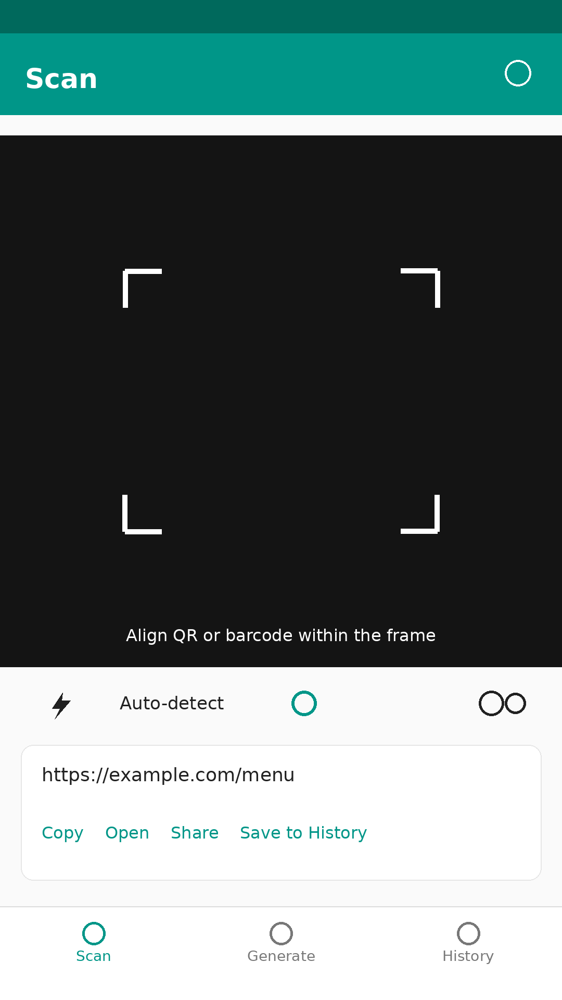
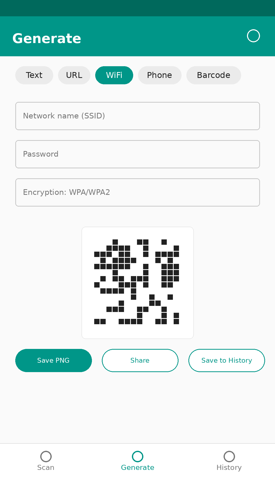
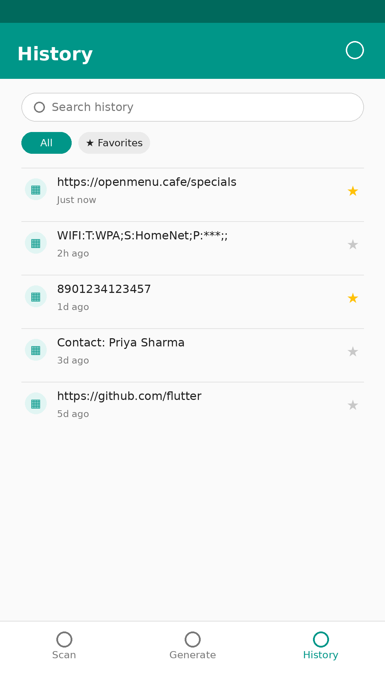

Everything you need, nothing you don't
Instant scanning
Point your camera at any QR code or barcode, or pick a photo from your gallery. Flashlight, pinch-to-zoom and auto zoom help with small or far-away codes.
Safer scanning
Links are checked for common warning signs before you open them. Payment codes show who you are about to pay, and the amount, before anything opens. These are warnings, not guarantees.
Make QR codes for anything
Links, text, Wi-Fi (including hidden networks), phone numbers, email, SMS, locations, contact cards and UPI payment codes, plus Code 128, EAN-13, UPC-A, Code 39 and ITF barcodes.
Batch scan and CSV export
Scan many codes one after another into a list, then export it as a spreadsheet file. Handy for stock, events and shops.
Smart results
Contact cards and calendar events are shown clearly and can be saved from the result screen. Scan a product barcode and search for it online in one tap.
History you can search
Every scan and generated code is saved on your phone, grouped by day. Search it, or star your favorites.
Pro, one time
Remove ads, lift the history limit, export to CSV, and make colored or rounded QR codes with your own logo. One purchase, no subscription.
Privacy by design
No account and no location access. Scanning and making codes happen on your phone, and your history stays there. Ads are shown with your consent where the law requires it.
Quick guides
How to make a Wi-Fi QR code
Let guests join your network by scanning, with no typing.
How to make a UPI QR code
Create a payment code for your shop, and check codes before you pay.
Scan many codes and export to CSV
Batch scanning for stock, tickets and events.
See it in action



Your data stays yours
No account required. No location access, ever. Your scan and generate history is stored only on your phone. The free version shows ads, and where the law requires it the app asks for your consent first. Read the full Privacy Policy.